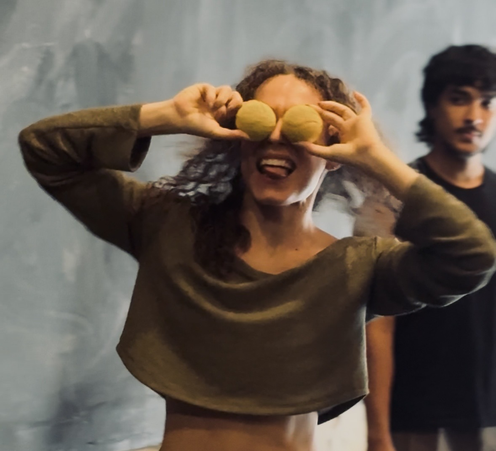
O CORPO 360° é uma metodologia em desenvolvimento criada por um homem trans. Isso não é detalhe — é o ponto de partida.
A técnica aqui não funciona como punição. O esforço é real, mas é aproveitado, não desperdiçado. O corpo não luta contra a gravidade: negocia com ela. Não domina o chão: entra em relação com ele. Estar no chão ou de pé são expressões da mesma unidade, não há hierarquia entre os níveis.
A criação começa de fora. Do espaço que não é vazio. Do outro que não é obstáculo. Do objeto que não é acessório. Do jogo que não julga. Antes de olhar para dentro, o CORPO 360° propõe olhar para fora e descobrir que a consciência de si nasce do contato com o que não é você.
A instabilidade não é corrigida.
É HABITADA.
O parceiro não é suporte.
É MATÉRIA VIVA.
O espaço não é vazio. É SUPERFÍCIE de CONTATO.
Essa inversão não é só técnica. É filosófica. E muda tudo.
CORPO 360° é um workshop para artistas do corpo que explora o movimento como estado permanente de relação. Através de floorwork, improvisação, partnering e ativação espacial, o corpo aprende que a instabilidade não é um problema a resolver — é o lugar onde tudo acontece. Quando tudo é matéria, quando tudo é superfície de contato, o chão e o espaço se tornam apenas outro corpo em relação.
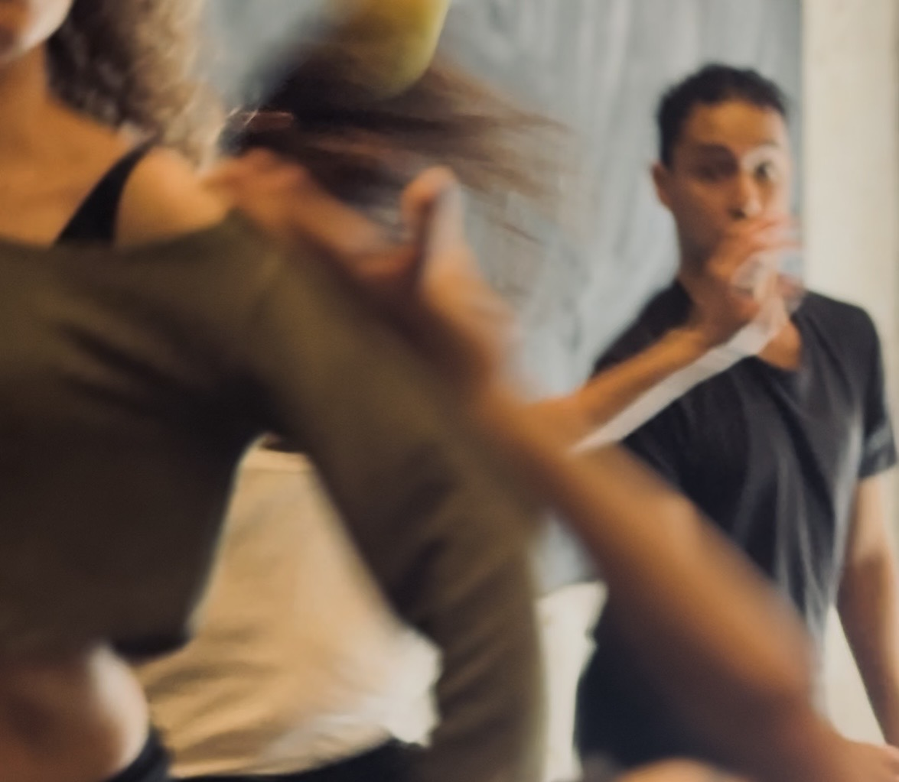
Três objetos circulares. Nenhum deles é neutro.
Cria um laço de atenção no espaço. Ela prova que existe relação mesmo sem toque — quem lança, quem recebe, quem observa: todos já estão em contato antes de qualquer movimento. Ela é pequena, mas o campo de tensão que ela abre é enorme.
Chega com outro peso, outra inércia, outro tempo. O corpo precisa se reorganizar inteiro para recebê-la. Não é um ajuste técnico — é uma negociação de presença. Ela lembra que o mundo exterior tem massa, e que dançar é também aprender a responder ao que pesa.
Envolve. Ele transforma o ar em superfície, o espaço invisível em matéria tangível. Dentro dele, ao redor dele, em oposição a ele — o corpo descobre que a resistência que sempre esteve ali pode ser habitada, não evitada.
Os três são circulares porque a esfera não tem hierarquia de superfícies. Ela não tem frente nem costas. Ela exige atenção em todas as direções — e é exatamente isso que o CORPO 360° propõe para o corpo humano.
O objeto entra no espaço como um outro corpo. Ele tem peso, forma e presença. Ele não pede que você pense — ele exige que você responda. E ao exigir resposta, ele ativa o que nenhuma instrução verbal consegue ativar sozinha: a consciência de si que nasce do contato com o que não é você.
A criação não começa por dentro. Começa no momento em que o objeto chega.
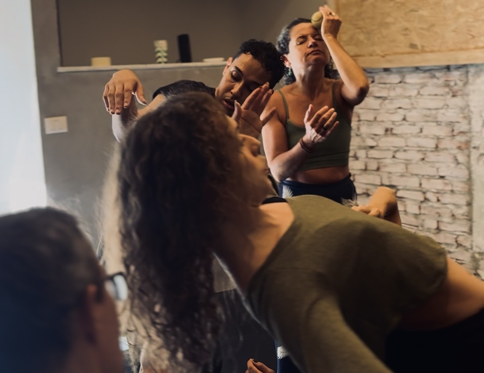
O workshop CORPO 360° nasce da trajetória do artista da dança Heleno Carneiro. Desde a infância, a prática da capoeira e as primeiras aulas de dança contemporânea no projeto sociocultural Quik Cidadania abriram caminhos para perceber o corpo como matéria em movimento. A formação em Teatro acrescentou à pesquisa as dimensões da expressividade e da presença performativa. O contato com o Gyrotonic aprofundou a compreensão de fluxos, espirais e alinhamentos internos. A passagem pelo Ballet Jovem Minas Gerais — onde também se formou em Ballet Clássico — trouxe versatilidade técnica.
O estudo de floorwork e da técnica Piso Movil na Colômbia, com Luisa Camacho, Xezar Garcia, Yenser Pinilla e Ingrid Londoño, expandiu a percepção do corpo e do espaço como matérias móveis. Residências em Técnicas MMS, Técnica Alexander, Contato Improvisação e Fight Monkey reforçaram a escuta ativa e os fundamentos técnicos. Na Europa, experiências com Flying Low e técnicas de chão com Helder Seabra e Amarnah Ufuoma Cleopatra, vivências com Botis Seva e Far From The Norm, e Marcos Morau na GöteborgsOperans Danskompani, além de passagens por companhias como Tanz Kassel, Theater Heidelberg e Lenka Vagnarova & Company aprofundaram a compreensão de fisicalidades diversas. Residências em Viewpoints e Método Suzuki, com Luciana Brandão e Bya Braga, abriram olhares sobre composição espacial. O trabalho com partnering — em residências com Patricia Kuypers, Franck Beaubois e Lali Ayguadé — consolidou a percepção da relação física entre corpos.
Todas essas experiências se entrelaçam no CORPO 360°.
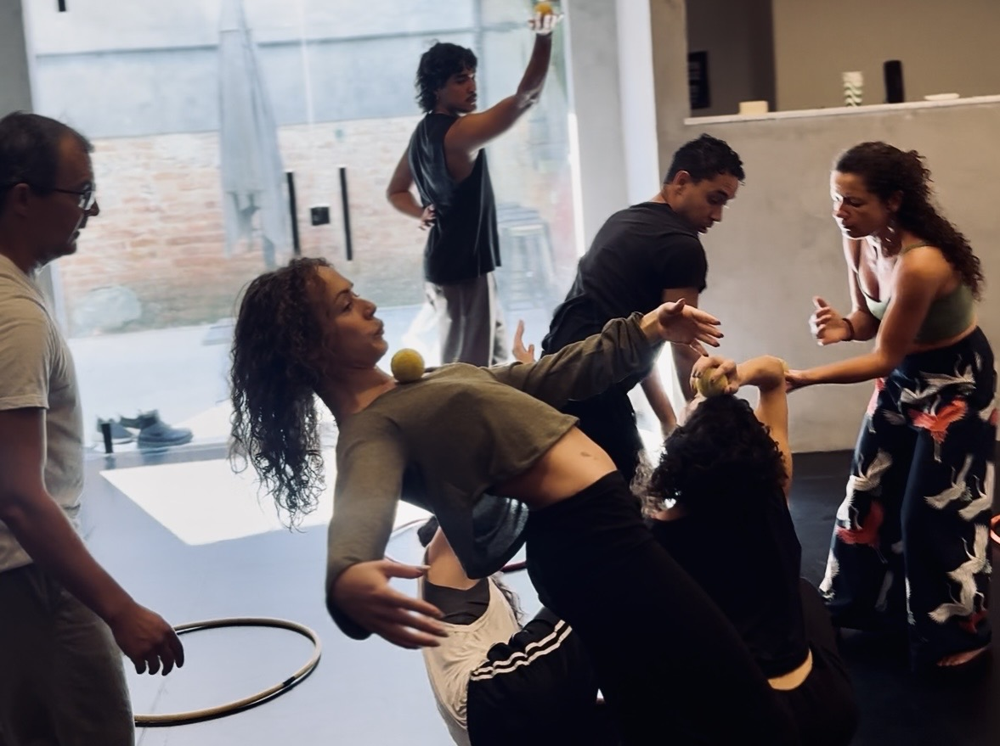
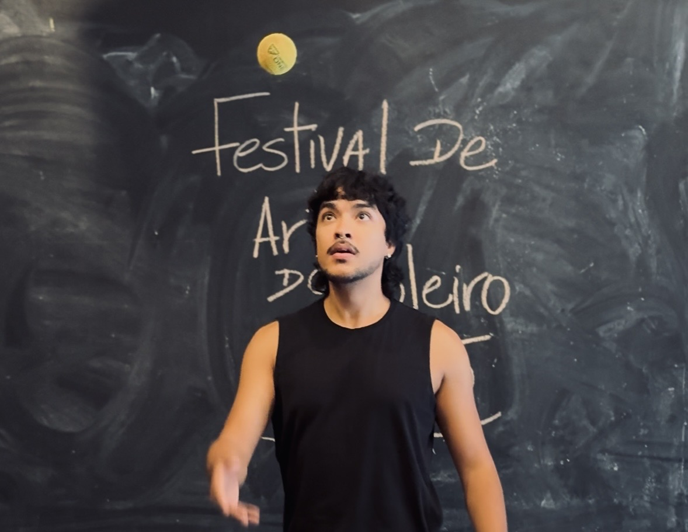
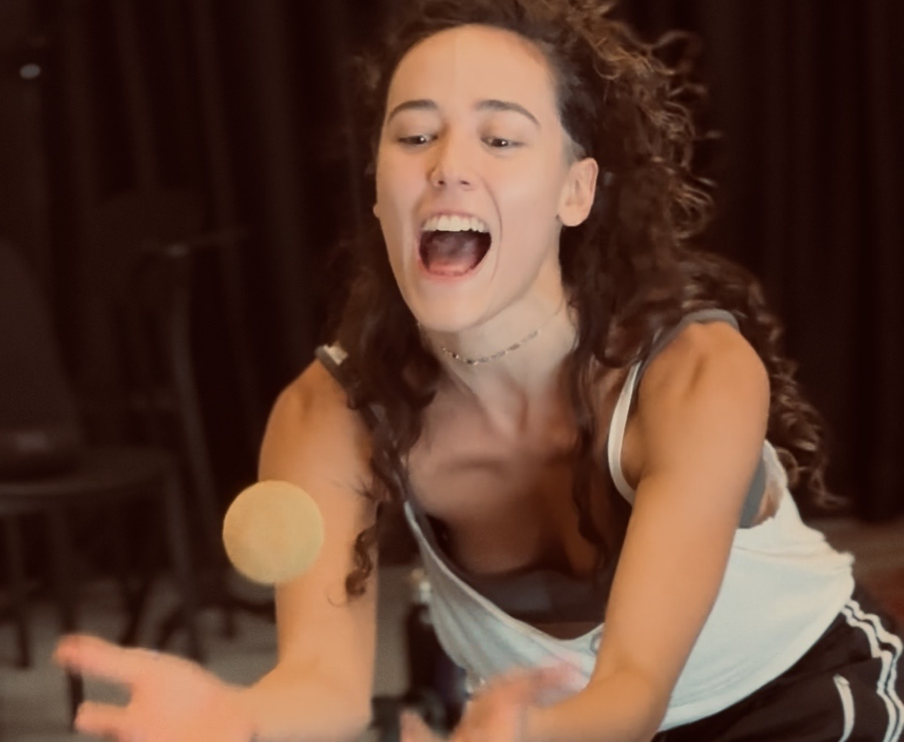
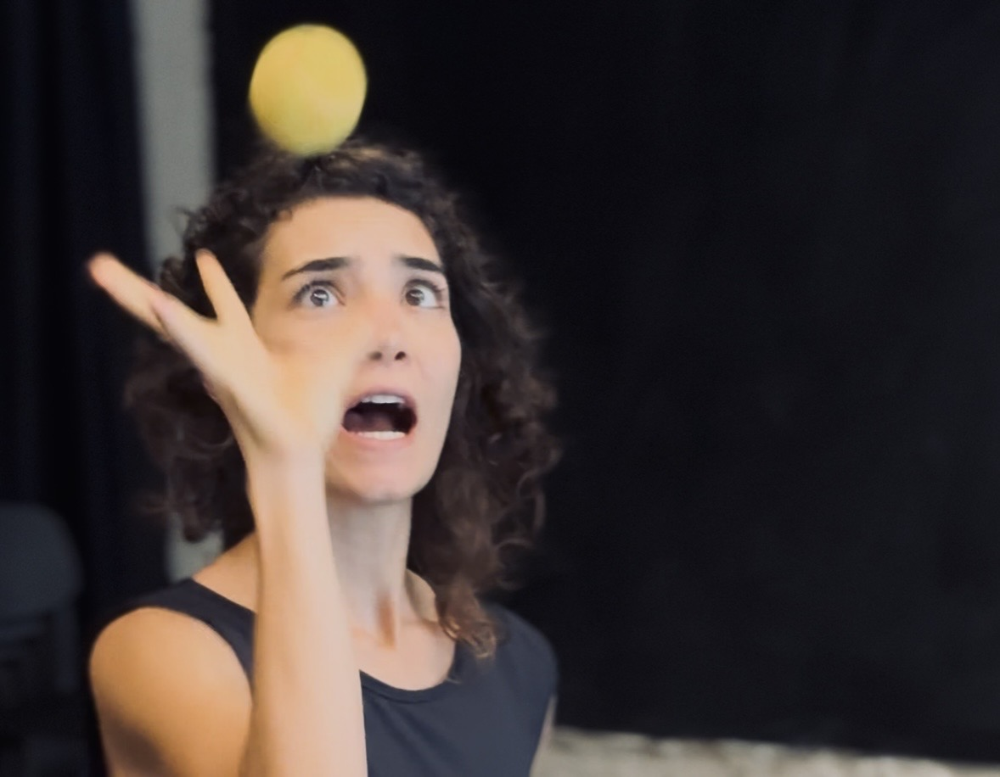
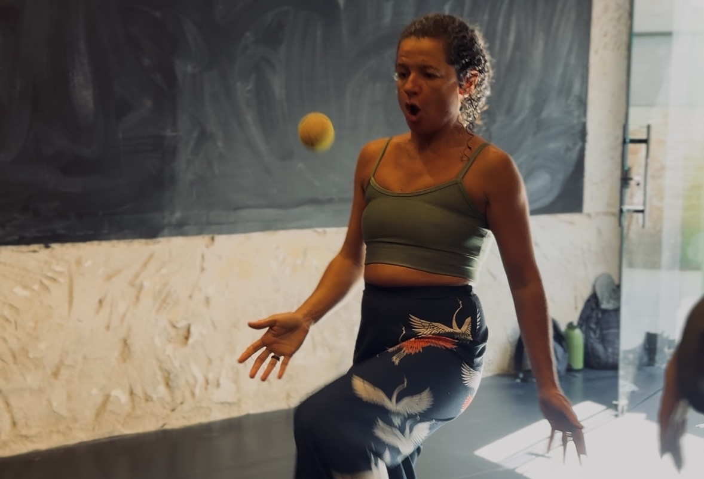
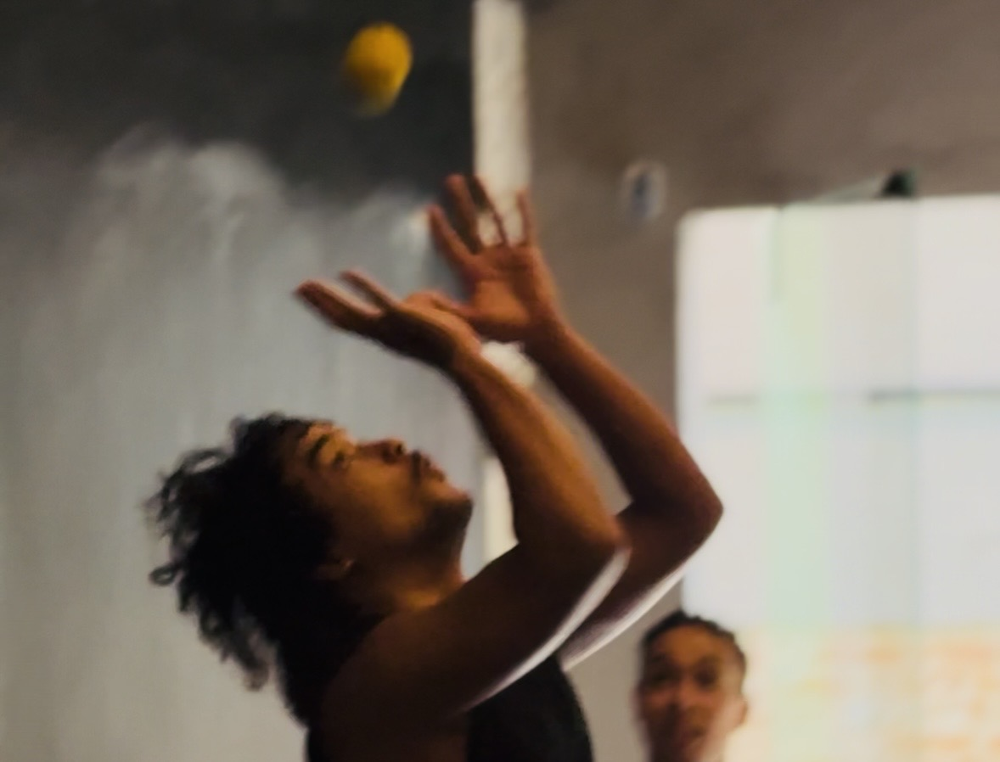
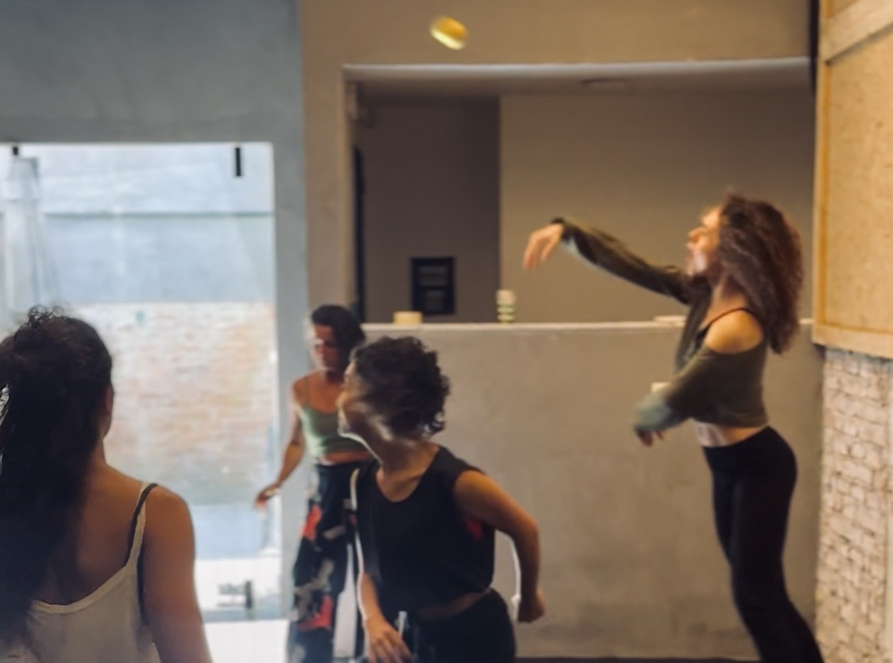
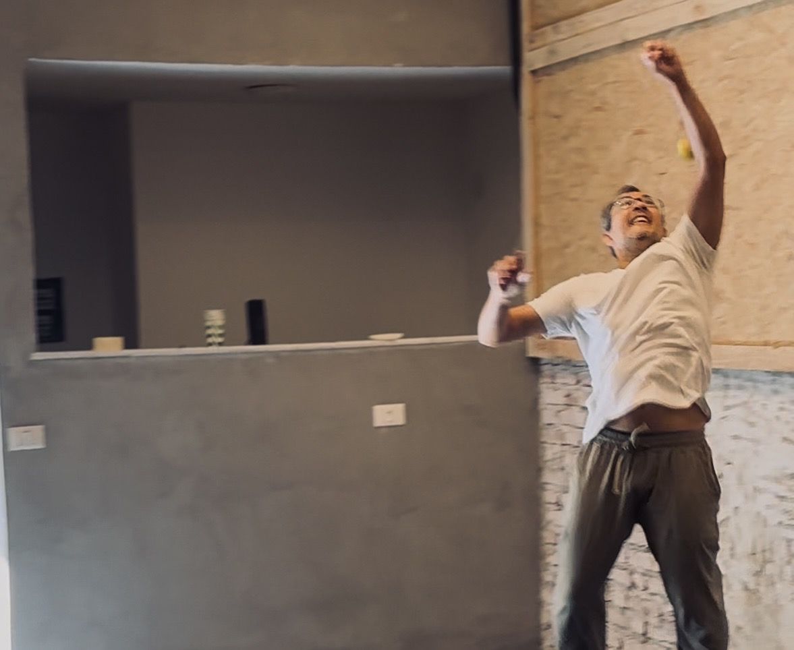
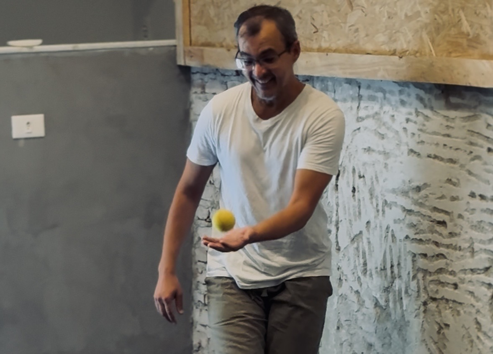
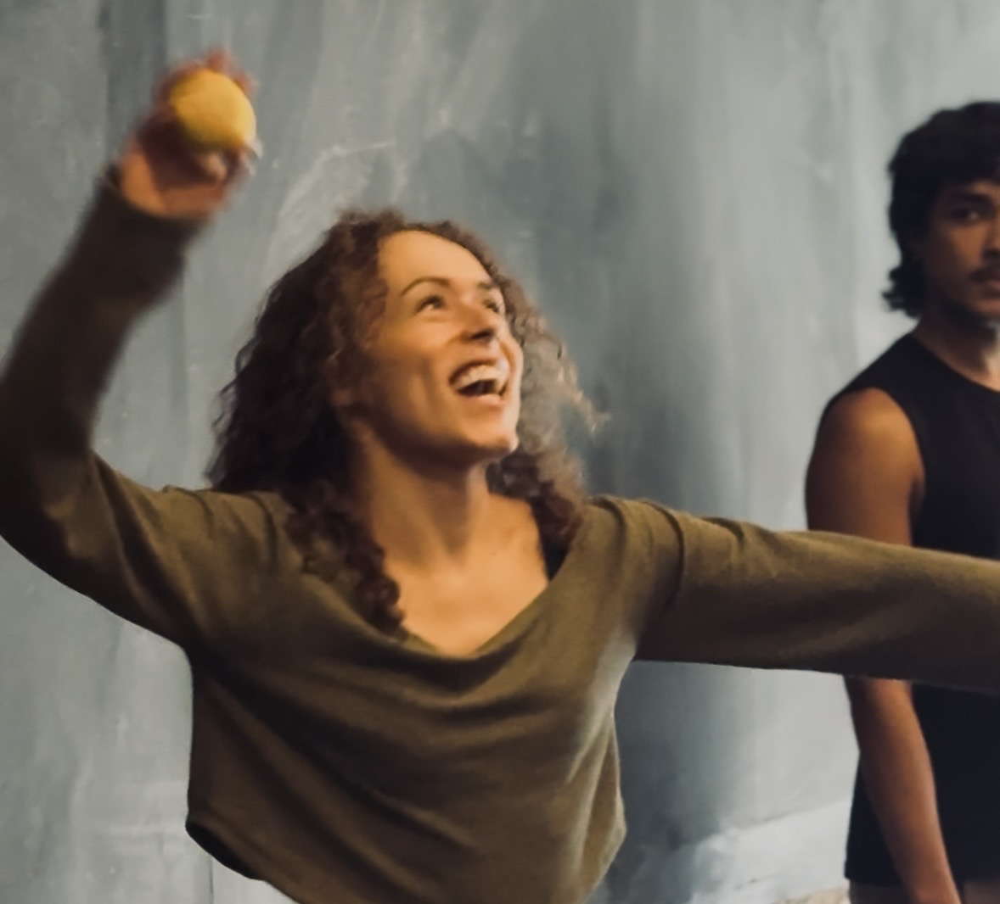